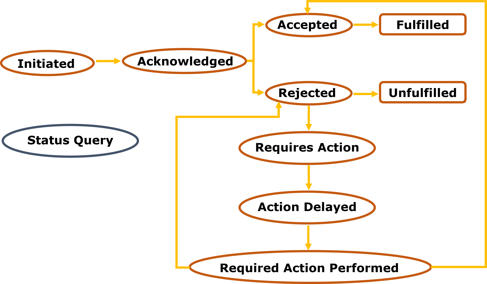

This section outlines how to indicate existing applicable data subject rights associated with a process,
using DPV and the EU GDPR extension to represent rights available under the GDPR.
A process can be used to express information regarding the what, how, where, who, and why personal data
is being processed, as well as what rights exist.
For indicating applicable GDPR rights, DPV's
EU GDPR extension
provides a mapping between legal bases and the applicable data subject rights.
This pattern can be followed by data controllers
to express which rights are applicable, including rights beyond the ones in the GDPR, e.g.,
EU's fundamental rights
and the rights depicted in other EU regulations or in other jurisdictions.
Notifying rights-related activities
This section outlines how to provide notices related with rights exercising management.
Generic right notices
can be provided to indicate which rights exist, when and where they are applicable, and other relevant information.
Notices can be associated with specific processes or activities using the
hasNotice property.
dcterms:issued and dcterms:valid can be used to indicate temporal information
related to notices, i.e., when it was issued and until when it is valid.
Descriptions and identifiers of the notices and their creators/publishers can be recorded using
DCMI Metadata Terms.
The notices should also include information about the data controller as well as the entity implementing the notice,
which can be the data controller or another entity acting on behalf of the data controller,
using dpv:hasDataController and dpv:isImplementedByEntity, respectively.
foaf:page can be used to indicate a document, e.g., Webpage, containing the contents of the
notice and further functionalities.
Right exercise notices
should be used to notify data subjects on where and how to exercise an active right,
which information is required, or to provide updates on an exercised right request.
Beyond the previously mentioned properties,
DPV's isExercisedAt property
can be used to associate rights with specific right exercise points, i.e., through right exercise notices,
and information required to exercise a right through the association with a process, using
DPV's hasProcess property.
The hasRecipient,
hasStatus, and
hasJustification
properties can be used to provide updates to the data subject on the status of a specific right exercising
activity, including a justification to why such right is being exercised.
Specific notices to inform of the
fulfilment,
towards fulfilment or about the
non-fulfilment
of a right are also provided.
Required actions that need to be performed by entities towards the fulfilment of a certain rights-related
request, that cannot be sufficiently detailed using DPV, e.g., issuance of payment terms, can be attached
to notices using policy languages such as
Open Digital Rights Language (ODRL).
The period of time the entities have to execute the required actions can also be expressed using ODRL
constraints and/or can be included in the notices using DPV's
Duration concepts.
For GDPR-specific notices, the
EU GDPR extension
provides concepts for
direct and
indirect
data collection notices, required by GDPR's Articles 13 and 14, respectively,
Subject Access Request (SAR) notices
to fulfil GDPR Right of Access, and
recipient notices
to fulfil GDPR's Art.19 notification requirements, regarding the recipients to whom a rights exercise
has been communicated, such as the right to rectification (Art.16), right to erasure (Art.17) or right to restriction
of processing (Art.18).
In the case of GDPR's Articles 13 and 14, the data subject should be notified of the identity and contacts of the
data controller and of the controller's representative if applicable, as well as receive notice of the contact details
of the controller's data protection officer. The notice should also include the purposes and legal basis for data
processing, and, in case such basis is the legitimate interests pursued by the controller or by a third party, said
interests should be specified. Data subjects should also be made aware of any recipients or categories of recipients
of the personal data, and, if applicable, about transfers of personal data to a third country or international
organisation, including the existence or absence of an adequacy decision for said country and applicable safeguards.
Furthermore, data subjects should be notified with regards to the data storage period, as well as their existing rights,
namely the rights to withdraw consent and to lodge a complaint and the rights of access, rectification, erasure,
restriction of processing, object and data portability.
In case the provision of personal data is necessary for statutory or contractual obligations or there is automated
decision-making, it should also be disclosed to the data subject.
Beyond the previously mentioned information, GDPR's Article 14 also requires the data subject to be notified about
processed categories of data and their respective sources.
In the case of the SAR notice, a DPV process can be used to notify the data subject about the type of personal data
being processed, the purpose for the processing, and to which recipients it was disclosed.
The storage period of the data is also indicated, as well as the existence of other data subject rights
and the source of the data if not collected from the data subject.
In case there is automated decision-making, it should also be disclosed to the data subject.
Is there a list of legitimate interests validated by authorities/case law?
According to GDPR's Articles 13, 14, and 15, in the case data is shared with any recipients, these can be notified to the
data subject by their category type instead of naming each recipient individually. DPV currently does not have
such a taxonomy. Can we reuse an existent one or should we define one in DPV itself?
According to GDPR's Articles 13, 14, and 15, in the case of the existence of automated decision-making,
including profiling, the data subject must be informed about it when exercising its right of access.
While DPV already includes concepts to model automation and decision-making, work still needs to be done to
come up with a model to represent information "about the logic involved, as well as the significance and
the envisaged consequences of such processing for the data subject".
Recording rights being exercised
This section outlines the information that needs to be recorded and maintained when a concrete
instance of a right was or is being exercised. Keeping such records is of interest to data controllers
to have machine-readable information about the status and fulfillment of requests, which can be used,
e.g., by auditors. To represent concrete records of rights being exercised, the
RightExerciseRecord concept,
a subclass of DPV's Record,
can be used to associate a particular request, or even distinct requests from the same data subject,
with corresponding activities exercised by entities towards fulfilling such requests, modelled as
RightExerciseActivity.
Rights exercise activities
A RightExerciseActivity
represents an instantiation of an activity being performed towards the exercising of a right.
Such activity instances should include metadata, e.g., timestamps, duration, or involved
entities, to track the provenance of a particular right exercising process, from the request itself to
its acknowledgement by the data controller and to the fulfilment or non-fulfilment of the right.
For easy record-keeping, each activity should be modelled as a
RightExerciseActivity instance,
which can be connected with other instances using DPV's
isBefore and
isAfter concepts.
In order to justify a certain right exercise activity, DPV contains a
Justification extension to
"enable representing specific justifications associated with non-fulfilment, non-requirement,
delays, and exercising reasons involved in processes", which can be used to justify the
non-fulfilment, non-requirement, delays, and exercising of rights.
How to connect a justification associated with a right exercising activity with the the GDPR
provision that inspired its definition?
The dcterms:source property can be used:
ex:RightExerciseActivity a dpv:RightExerciseActivity ;
...
dpv:hasJustification ex:Justification .
ex:Justification a justifications:FreedomOfExpressionImpaired ;
dcterms:source "GDPR Article 17.3(a)"^^xsd:string .
Additionally, to track the status of rights exercising activities, DPV's
RequestStatus concepts, including
RequestAccepted
for a request being accepted towards fulfilment,
RequestRejected
for a request being rejected towards non-fulfilment or
RequestRequiresAction
for a request requiring an action to be performed from another party.
Figure 1 illustrates the sequence in which these concepts occur. Once the request
is initiated, it should be then acknowledged by the entity implementing it and either accepted towards fulfilment
or rejected towards non-fulfilment. Additionally, after being rejected, the entity fulfilling the
request can also require further action from the requester (e.g., request additional data to be able
to fulfil the request), which can delay the acceptance or rejection of the request, and after the
required action is performed, the request can either be accepted towards fulfilment or get rejected
again towards non-fulfilment or towards asking again for further action.

Lifecycle of DPV's concepts to model the status of a request.
DPV's concepts can be used in conjunction with the
W3C's PROV-O recommendation
to track the provenance of a right exercising activity instance. Using this
standard, provenance information, regarding the entities whom the activity is associated with, i.e.,
prov:wasAssociatedWith,
or what data/notice was generated, i.e.,
prov:generated,
by the right exercise activity, can be represented.
prov:actedOnBehalfOf can also be
used to represent delegation or representation, for instance when a parent exercises a right on behalf of its child.
Similarly to notices, temporal information, descriptions and identifiers of the activities and their
creators/publishers can be recorded using DCMI Metadata Terms.
In this section, we include examples of rights exercising activities covering the lifecycle of statuses of requests,
using an exercised GDPR right of access as an example.
In this latest example, a SAR notice is not included as
Section 3 already includes a set of modelled notices, including an example of a modelled
SAR Notice.
Moreover, DCAT can be used to model resources
beyond notices, for instance, a copy of the personal data, which is required in both GDPR's access and data
portability rights. DCAT promotes the usage of the properties such as dcterms:format,
dcterms:valid, and dcat:landingPage to include information regarding the format, validity
and dataset provision location, respectively, to characterize the dataset in question.
Additionally, DCAT promotes the usage of ODRL to express license and rights statements, by linking the dataset with
an ODRL policy using the odrl:hasPolicy property, or the usage of DCMI Metadata Terms' license,
accessRights or rights properties to link datasets with licenses, access rights statements
or other types of rights statements, e.g., copyrights, respectively. The latter can be used to express 'high-level'
access control statements, e.g., embargoed, restricted or open access, while the former has the advantage of also being
a W3C Recommendation, for policy expression, which provides a model to represent complex policies and an easy mechanism
to extend its model to cover other use cases.
In this Section, the GDPR's Right of Access is used as an example to showcase how to model right exercising activities
using DPV, DCMI Metadata Terms, PROV-O and DCAT. However, a similar pattern can be followed by data controllers to
fulfil the other rights as in most cases the only substantial change would be the notice concept that needs to be used
for a particular right instance, e.g., eu-gdpr:DirectDataCollectionNotice for the right fulfilment notice
related to GDPR's Article 13, eu-gdpr:IndirectDataCollectionNotice for the right
fulfilment notice related to GDPR's Article 14 or eu-gdpr:RightsRecipientsNotice
for the right fulfilment notice related to GDPR's Article 19.
Additionally, the proposed model for right exercising activities is generic enough to support the representation of rights
from other jurisdictions and can be easily extended if the need arises.
Rights exercise records
As previously mentioned,
RightExerciseRecords
can be used to associate a particular request, or even distinct requests from the same data subject,
with corresponding activities exercised by entities towards the fulfilment or non-fulfilment of such requests,
e.g., using the dcterms:hasPart property.
For integration with DCAT-based systems, right
exercise records can also adapt DCAT's standard to represent data catalogs - a right exercise record can also be
modelled as a dcat:Catalog and right exercise activities
as dcat:Resources, which can be bundled and ordered
using dcat:DatasetSeries.
This also brings the advantage of using DCAT's ordering properties, i.e.,
dcat:first,
dcat:last, and
dcat:prev,
to retrieve the latest activity related to a particular rights-related request.
Automating the execution of GDPR-related rights requests with policies
This section outlines how to use DPV and the Open Digital Rights Language (ODRL) for data subjects
to send GDPR-related right requests in a machine-interpretable format to data controllers, which can
integrate an automated response in their rights management processes to easily reply to data subjects.
For instance, systems implementing an ODRL evaluator according to the
formal semantics of ODRL
can evaluate policies in order to understand which ones are active, have been violated or fulfiled, and
act accordingly in a constant, interoperable manner.
GDPR's data subject rights described in Articles 15 to 22 can be instantiated as ODRL policies containing
permissions, prohibitions and obligations to data controllers to act upon or fulfil.
In particular, GDPR's right of access can be interpreted as a duty to the data controller to provide a
copy of the data subject's personal data, as well as a notice with information about the purpose(s) to which
it is being used, recipients to which the data has been disclosed, and so on.
ODRL policies also allow restrictions in the scope of the right: let's say that the data subject only wishes to
have access to a certain type of data or to all data that has been processed for only a particular purpose - these
restrictions can be modelled with a odrl:Constraint.
Right to rectification
GDPR's right to rectification can be modelled as a permission to use the corrected data with the duty to delete
the data that is incorrect. Moreover, according to Article 19, if the data has been disclosed to recipients,
the data controller has the duty to inform the data subject about said recipients.
Right to erasure
GDPR's right to erasure can be modelled as an obligation to delete the personal data of the data subject,
on one of the grounds established in Article 17.1. Such grounds can be expressed using DPV's
Justification concepts.
Moreover, according to Article 19, if the data has been disclosed to recipients,
the data controller has the duty to inform the data subject about said recipients.
Right to restriction of processing
GDPR's right to restriction of processing can be modelled as a prohibition to further process the personal data
of the data subject, on one of the grounds established in Article 18.1. Such grounds can be expressed using DPV's
Justification concepts.
Moreover, according to Article 19, if the data has been disclosed to recipients,
the data controller has the duty to inform the data subject about said recipients.
Right to data portability
GDPR's right to data portability can be modelled as an obligation to the data controller to send the personal data
of the data subject upon request, which can be constrained to be in a certain format.
The data subject can also request the data to be transmitted directly to another controller - this can be modelled
as an obligation as well, where the data controller has the obligation send the data to another data controller, which
is modelled as the recipient of the rule.
Right to object
GDPR's right to object can be modelled as an prohibition to the data controller to use the personal data
of the data subject when said processing is based on legitimate or public interests described in Article 6.1(e)(f).
The data subject can also request the controller to stop processing personal data for direct marketing purposes -
this can be modelled as an prohibition to use data with a dpv:DirectMarketing purpose constraint, or
to stop processing her data for scientific or historical research purposes or statistical purposes - again, this
can be modelled as an prohibition to use data with a purpose constraint.
In the examples below, we express each of these rules as independent odrl:Request policies,
however if necessary they can be merged, e.g., into a single policy.
Currently, DPV does not include a purpose term for historical research.
Right not to be subject to a decision based solely on automated processing
GDPR's right not to be subject to a decision based solely on automated processing, including profiling,
can be modelled as a prohibition to use personal data when the processing context, i.e., dpv:ProcessingContext,
is based on automated decision-making, i.e., dpv:AutomatedDecisionMaking.